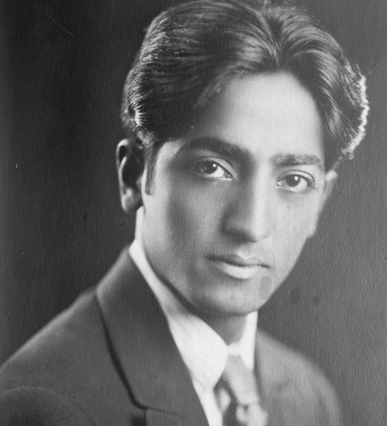

How a handful of charismatic people carried the East to the West and made it land. Five of them, one idea each, and the awkward fact that some of the teachers were a mess.
A distillation /five teachers, one idea/21 sources/ 15 min read
In August 1929, a thirty-four-year-old man stood up in front of three thousand people who believed he was the messiah, and quit. They had spent twenty years getting ready for him. He told them to go home.
The man was Jiddu Krishnamurti, and the people were the Order of the Star in the East, an organization built around a single prediction: that the next great spiritual teacher of humanity was coming, and that he would speak through this particular Indian boy. The Theosophical Society had found Krishnamurti on a beach as a teenager, decided he was the chosen vehicle, and raised him for the role. By 1929 the Order had tens of thousands of members, land, and money. On the opening day of its annual camp in Holland, with his patrons in the audience, Krishnamurti dissolved the whole thing.
I maintain that Truth is a pathless land, and you cannot approach it by any path whatsoever, by any religion, by any sect.Krishnamurti, dissolving the Order of the Star, 3 August 1929
Truth was not a thing he could hand anyone, he told them, so there was nothing to belong to and no one to follow, himself included. Then he gave the land back, walked away from the most enviable job in the spiritual world, and spent the next fifty-seven years telling audiences not to make him their teacher either.

Jiddu Krishnamurti as a young man. Bain News Service. Public domain.
Krishnamurti was one of a small number of people who, across the twentieth century, did what the careful scholars mostly had not: they took the spiritual traditions of the East, Zen and Taoism and the Hindu paths, and got them through to ordinary Western people. The East had been arriving in pieces for a long time. A Hindu monk named Vivekananda had stunned a Chicago audience in 1893; a Japanese scholar named D.T. Suzuki had been putting Zen into careful English for years; the Theosophists had been stirring all of it together since the 1870s. But careful is not the same as contagious. What these teachers had was the second thing.
Each of them took something enormous and kept one piece of it. One idea, said so well that millions of people who would never open a sutra felt it anyway. Watts kept "you are it." Ram Dass kept "be here now." Tolle kept "you are not your mind." Krishnamurti kept "follow no one." Gurdjieff, the strange root under a lot of it, kept "wake up." They dropped almost everything else, and the dropping is part of why it worked.
There is a catch, and you have to hold it the entire time. Some of these men were a mess, and a couple were worse than that. One drank himself to death. One preached non-attachment while keeping a secret affair going for twenty-five years. One spent his whole life dogged by the charge that he was a con man, and the record does not really clear him. The teaching and the teacher are not the same thing, and the whole skill of reading these five is learning to pull the two apart. Here they are: the one idea each, the actual words, and the catch.
The five
One idea each, kept and polished
Take them one at a time. Each card is one teacher: the single idea they carried, a line in their own words, and the honest catch about the person who said it. Different vocabularies, and, as you will see by the end, pretty much the same idea.
tap a name, or use the arrow keys
You are it
The universe is doing you
Watts's one idea: you are not a separate little self, sealed inside a bag of skin, looking out at a universe that is not you. You are the universe, doing the temporary thing it is doing right here as you, the way the ocean does a wave. The feeling of being a lonely ego walled off from everything else is a kind of optical illusion, and seeing through it is the whole game.
He was the great translator of the bunch. An Englishman who had read his way deep into Zen and Taoism and could explain them in a warm, funny voice that made you feel the point instead of just filing it. His book The Way of Zen and a shelf of recorded talks put Zen into more American heads than any monastery did.
We do not "come into" this world; we come out of it, as leaves from a tree.
The catchHe never trained as a Zen monk and never claimed to. He called himself "a philosophical entertainer, a genuine fake," drank heavily for years, and died of it at 58.
Alan Watts, The Book: On the Taboo Against Knowing Who You Are (1966).
Be here now
The only place you can be
Ram Dass's one idea fits on a bumper sticker, which is the point: be here now. Not in the past, which is memory. Not in the future, which is worry. The present moment is the only place anything is actually happening, and almost none of us spend any time there. He learned it in India and spent the rest of his life pointing at it.
He got there by the strangest road of the five. He was Richard Alpert, a Harvard psychologist running the early experiments that fed people psilocybin and LSD, until Harvard fired him in 1963. He went to India chasing something the drugs kept showing him but could not make stick, found a guru in the Himalayan foothills, and came home as Ram Dass, "servant of God." His 1971 book Be Here Now became the handbook for a generation's turn from getting high to waking up.
We're all just walking each other home.
The catchThe most honest of the five about his own ego and appetites. He came out as bisexual in 1994, kept owning his failures in public, and after a stroke left him half-paralyzed he called the wreckage "fierce grace."
Ram Dass (Richard Alpert), Be Here Now (1971); the line titles his last book (2018).
You are not your mind
The voice in your head is not you
Tolle's one idea: the nonstop voice in your head, the one narrating and rating and worrying, is not you. You are the awareness underneath it, the thing that can notice the voice running. Most suffering is just getting fused with that voice and dragged around by it. Step back into the awareness, which only ever exists right now, and the grip loosens.
His origin story is the teaching. At 29, deep in depression, he was lying awake thinking "I cannot live with myself," when the sentence turned on him. If I cannot live with myself, there must be two of me, the "I" and the "self" it cannot stand, and maybe only one is real. Something let go. He spent about two years more or less blissed out on park benches, then wrote The Power of Now, which sold slowly until Oprah put her weight behind it, and then sold by the millions.
If I cannot live with myself, there must be two of me.
The catchThe ideas are old (Zen, Advaita, the present moment) and mostly sound. The business around them is new: thousand-dollar retreats and a subscription channel, from a man who says he never meant to build any of it.
Eckhart Tolle, The Power of Now (1997), introduction.
Truth is a pathless land
Follow no one, starting with me
Krishnamurti's one idea is the most radical, because it eats the others: there is no path to truth. No method, no system, no teacher who can take you there. The moment you start following someone, you have stopped looking for yourself and started copying them. So he refused to be followed. No technique to sell, no steps, no authority, including his own.
He had more reason than anyone to distrust the role, because he had been handed it. The Theosophists raised him from boyhood to be the messiah, and at 34 he gave the whole thing back (the story at the top of this page) and told them truth was not something he or anyone could pass to them. For the next half-century he just talked, all over the world, circling one instruction: look at your own mind directly, without a system and without the "you" that wants a comfortable answer.
The moment you follow someone you cease to follow Truth.
The catchAnd then he let people follow him for fifty years: foundations, schools, devoted crowds. He also kept a sexual relationship with a married colleague's wife secret for roughly twenty-five years, which came out only after he died.
J. Krishnamurti, dissolution of the Order of the Star, 3 August 1929. The affair: Radha Rajagopal Sloss, Lives in the Shadow with J. Krishnamurti (1991).
Wake up
Most people are asleep machines
The oldest and strangest of the five, and the root a lot of the others quietly tap. Gurdjieff's claim: you are not awake. You think you are conscious and choosing and doing, but you are mostly a machine on autopilot, reacting to whatever lands on you, asleep with your eyes open. There is no single "you" in there running the show, just a crowd of reflexes taking turns and calling itself a person. Real life only starts when you wake up, and waking up is work that almost nobody does.
The work he taught was "self-remembering," the hard trick of staying aware of yourself and the world at the same time instead of vanishing into whatever you are doing. Gurdjieff was a magnetic, slippery Greek-Armenian who said he had pieced the system together from years among Sufi orders and remote monasteries. We have it in plain, teachable form mostly because his student P.D. Ouspensky wrote it all down.
Man is a machine. All his deeds, actions, words, thoughts, feelings, convictions, opinions, and habits are the results of external influences.
The catchGurdjieff is the cautionary case. Authoritarian, manipulative on purpose, accused of being a con man; he slept with students and fathered children by them. Ouspensky eventually decided he could not trust the man, and broke with him while keeping the ideas.
P.D. Ouspensky, In Search of the Miraculous (1949), recording Gurdjieff's teaching.
The through-line
It is the same idea five times
Line the cards up and they start to rhyme. Watts says you are not a separate self. Tolle says you are not the voice in your head. Gurdjieff says you are not even awake. Ram Dass says you are not here, you are off in memory and worry. Krishnamurti says you will not find your way out by following anyone. Five different vocabularies, one move underneath all of them: the everyday "you," the anxious narrator running your day, is not the whole of you, and there is something wider and more present underneath that you can step into.
That move is not theirs, and none of them pretended it was. It is the oldest claim in the contemplative traditions: the anatta, the "no-self," at the center of the Buddha's teaching; the dissolving boundaries of the Tao; the "you are already that" of Advaita Vedanta behind the Gita. What these five did was strip the Sanskrit and the metaphysics off it and hand a Western reader the part you can actually use today: pay attention, right now, and notice you are bigger than the chatter.
Watts, who spent his whole life looking for the cleanest way to say it, maybe got closest:
You are an aperture through which the universe is looking at and exploring itself.Alan Watts, Still the Mind (a posthumous collection of his talks)
The teacher problem
What to do with a flawed messenger
So here is the question you cannot skip. Why take spiritual advice from a man who drank himself to death, or one who quietly betrayed his closest colleague for decades, or one that careful biographers still argue may have been a fraud? It is a fair objection, and it has sunk a lot of teachers for a lot of people.
The objection
A teaching about how to live should come from someone who can live. If the man who tells you to drop your ego is secretly run by his, the experiment is failing in public. You are being asked to take the cure from people it did not cure. At best they were hypocrites; at worst they used the teaching as cover to take what they wanted from the people who trusted them.
The honest version
Both can be true at once: the idea is worth having, and the man was not to be trusted. "You are not the voice in your head" is true or false on its own, no matter who says it; you can test it in your own experience in about a minute, which is the whole point. The flawed teacher is a real warning, but the warning is about following him, not about the idea. And the best of these five told you that directly. Krishnamurti's entire teaching was: do not trust me, check it yourself.
The sharpest version of the problem is Krishnamurti himself. He built a life on "follow no one," and then thousands of people followed him, and he let them, and he kept a long secret that made a liar of the openness he preached. It is easy to read that as the idea refuting itself. It might be the opposite. The man who saw the trap of authority more clearly than anyone alive still could not fully climb out of it. The ego he kept warning you about was running him too. That is not proof he was wrong. It is the strongest evidence he was right about how hard it is.
One small honesty, while we are here. The quote the internet loves to put under Krishnamurti's face, "it is no measure of health to be well adjusted to a profoundly sick society," has never been found in anything he actually wrote or said. It sounds like him. That is exactly why it is worth not trusting. Even here, the instruction holds: check the source, do not take the teacher's word, or the meme's.
The fine print
Sources, and a note on the quotes
This is a distillation of five bodies of work, told in my own words; the ideas belong to the teachers. Quotes are kept short and are reproduced for study and comment, checked against a primary or authoritative source and cited below. A couple of the originals use an em dash; the site does not, so those are shown with a comma, with no change to the words. No em dashes, anywhere.
The full list, 21 sources
Krishnamurti, the dissolution speech. "Truth is a pathless land," delivered at Ommen, Holland, 3 August 1929, dissolving the Order of the Star. Full text via the Krishnamurti Foundation. the speech
Krishnamurti and Theosophy. Discovered by Charles Leadbeater, raised by Annie Besant as the intended vehicle for the "World Teacher"; the Order of the Star in the East. overview
The affair. Krishnamurti's roughly 25-year relationship with Rosalind Rajagopal, wife of his associate D. Rajagopal, was made public by her daughter Radha Rajagopal Sloss in Lives in the Shadow with J. Krishnamurti (Bloomsbury, 1991). on the book
The misattributed line. "It is no measure of health to be well adjusted to a profoundly sick society" is widely credited to Krishnamurti with no located primary source. the trail
Krishnamurti and David Bohm. His long dialogues with the physicist, on thought, time, and the observer. the dialogues
Alan Watts, the bridge. Episcopal priest turned populariser of Zen and Taoism; The Way of Zen (1957), the KPFA talks, Esalen. biography
Watts, "leaves from a tree." "We do not 'come into' this world; we come out of it, as leaves from a tree." The Book: On the Taboo Against Knowing Who You Are (Pantheon, 1966). the text
Watts, "an aperture." "You are an aperture through which the universe is looking at and exploring itself," printed in Still the Mind: An Introduction to Meditation (New World Library, 2010), p. 90, a posthumous collection of his talks. the quote
Watts on himself. "A philosophical entertainer, a genuine fake, an irreducible rascal," his standing line from the early 1960s; the title of Monica Furlong's biography is Genuine Fake. source
Watts, the drinking and the death. Heavy alcoholism, an "open secret"; died 16 November 1973, age 58. on his death
Ram Dass, the turn. Richard Alpert, Harvard psychologist; the Harvard Psilocybin Project with Timothy Leary; dismissed in 1963; India, Neem Karoli Baba, the name Ram Dass. biography
Be Here Now. Ram Dass, Be Here Now (Lama Foundation, 1971), the book that carried the message into the counterculture. about
Ram Dass, "walking each other home." The line titles Walking Each Other Home (with Mirabai Bush, Sounds True, 2018). his foundation
Ram Dass, candor and "fierce grace." Came out publicly in 1994; the 1997 stroke and his response, in the documentary Fierce Grace (2001). the film
Eckhart Tolle, the awakening. The "I cannot live with myself / there must be two of me" passage, The Power of Now (Namaste, 1997), introduction. biography
"You are not your mind." The first teaching chapter of The Power of Now; the awareness beneath thought, and the pain-body. the book
Tolle and Oprah.A New Earth (2005) chosen for Oprah's Book Club in January 2008; the ten-week webinar drew tens of millions. overview
Tolle, the commercial critique. High-priced retreats and a subscription channel; his own statement that he never intended "a heavy commercial structure." reception
Gurdjieff and the Fourth Way. "Man is a machine"; self-remembering; the way of the "sly man," working on body, heart, and mind at once. P.D. Ouspensky, In Search of the Miraculous (Harcourt, 1949). the text
Gurdjieff, the man. The Institute at Fontainebleau; the charlatan accusations; Katherine Mansfield's death there of tuberculosis in January 1923; the 1924 car crash. biography
Ouspensky's break. Ouspensky separated from Gurdjieff in 1924, came to distrust him, and kept teaching the system on his own. biography